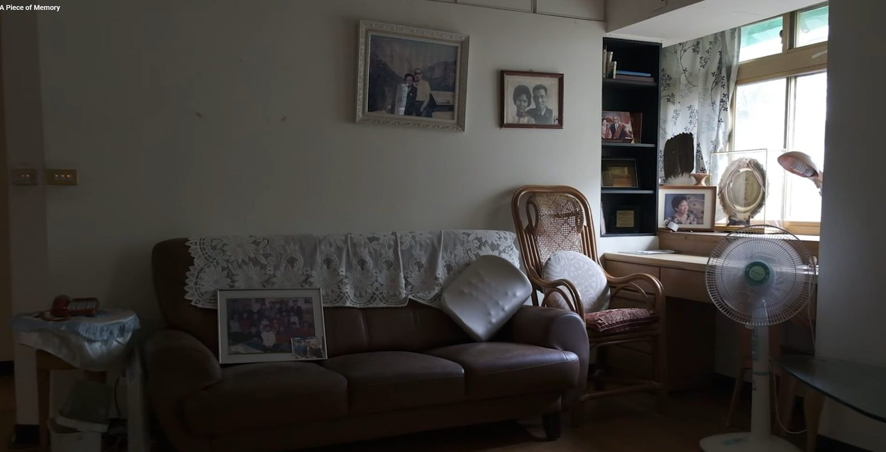
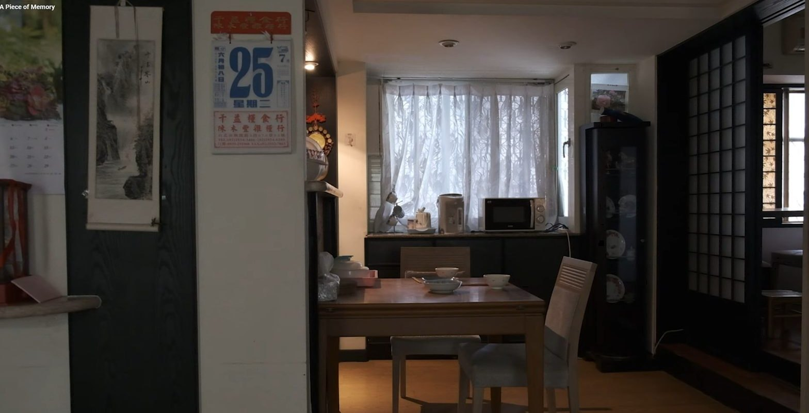
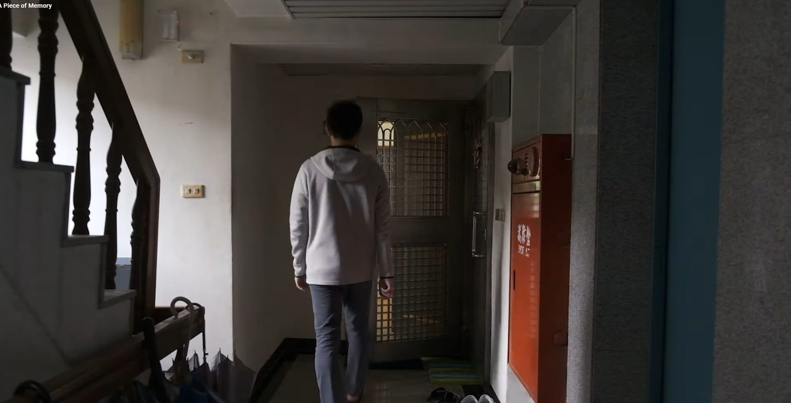

Synopsis劇情簡介
Grandma passed away when she was 95, but her presence still lingers in her house.
奶奶在九十五歲那年離開了，但她的氣息仍留在那棟房子裡。
Director’s note — It took me a while to gather the courage to visit the apartment where she used to live. After arriving, the eerily silent apartment seemed to come alive with faint sounds.導演的話——我花了好一陣子才鼓起勇氣回到她生前住的公寓。踏進去之後，那間安靜得詭異的屋子，彷彿被細微的聲響重新喚醒。
★ Jury Award — MAX3MIN Very Short Film Festival 2025Fargo Film FestivalCentre Film Festival
← All films回到所有電影


